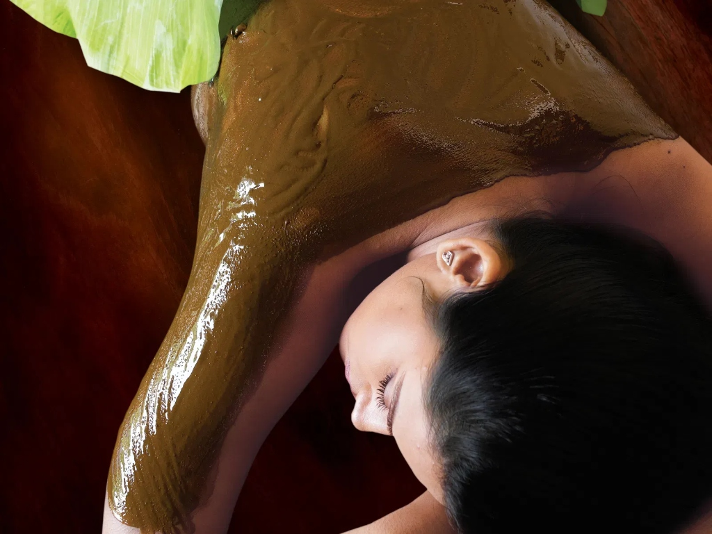
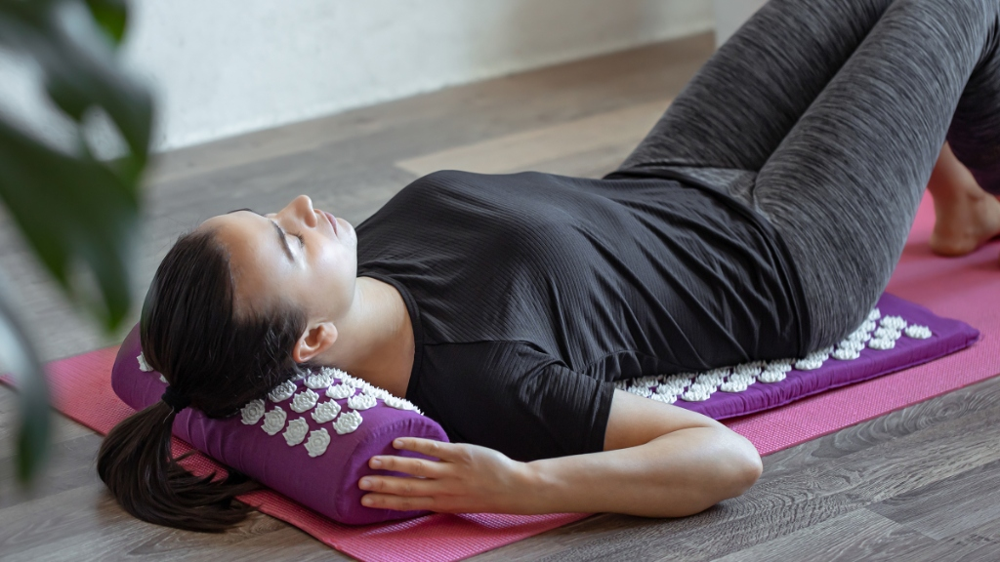
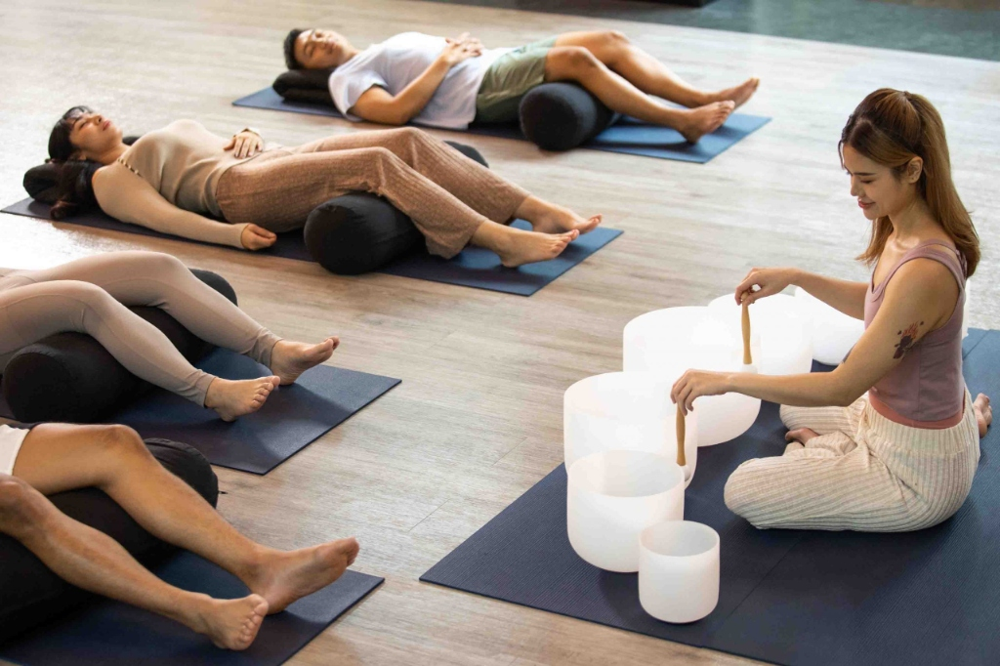
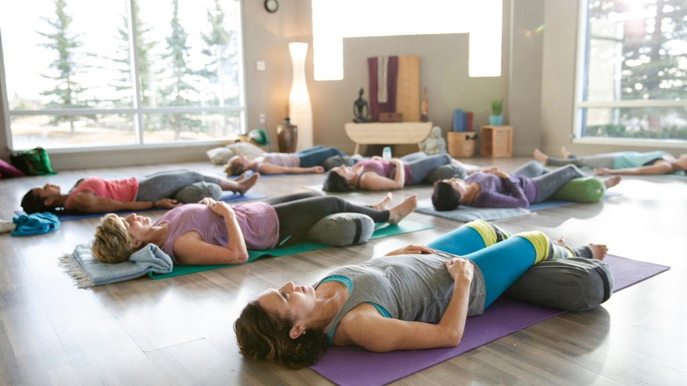

Circulation & Ease
Hydrotherapy & Thermal Immersion
Warm and cold water applications, spinal spray baths, and mineral wraps that gently stimulate venous return and relax deep muscular holding.
Step into a light-filled space dedicated to thoughtful self-care. At Sattva, we blend mindful yoga therapy, natural body care, and unhurried clinical consultations to help you feel centered, grounded, and renewed.
True wellbeing isn’t found in rigid routines or extreme restrictions. We help you build a caring, intuitive relationship with your body through manageable adjustments to four fundamental daily areas:
Gentle functional postures that release stiffness and restore range of motion.
Simple breath techniques to diffuse mental pressure during busy afternoons.
Evening wind-down rituals to support deeper, naturally restorative sleep.
Wholesome, digestion-friendly food choices that nourish from within.
Discover nine distinctive restorative modalities, each shaped to address specific wellness aspirations with comfort and clinical expertise.
Warm and cold water applications, spinal spray baths, and mineral wraps that gently stimulate venous return and relax deep muscular holding.

Earth CoolingLocally gathered natural clay packs applied to the abdomen, spine, or eyes to gently absorb excess heat and promote localized decongestion.

Meridian BalanceTargeted micro-point stimulation performed by certified practitioners to help unblock stagnant physical energy and ease localized discomfort.
Synchronized full-body oil application designed to lubricate the joints, deeply nourish tired tissues, and quiet sensory overload.
Gentle spinal traction, supportive prop alignment, and mobility exercises specifically tailored to relieve desk-bound back and neck strain.

Vibrational StillnessResonant Tibetan singing bowl frequencies and gentle harmonic chimes that guide the brain into calm alpha-wave states for profound mental reset.

Sleep HygieneTherapeutic evening foot packs, calming chamomile compresses, and guided neuro-relaxation to restore natural circadian rhythms.
Combine open-air forest walking meditation, private hydro suites, and seasonal organic herbal teas for a wholesome day away from digital screens.
Targeted pressure techniques applied to key reflex zones on the feet and hands, stimulating natural meridian energy pathways and physical release.
We prioritize clarity, calm preparation, and personalized attention at every turn of your wellness appointment.
Choose your preferred date, therapy, and consulting doctor through our online portal. You will receive an arrival guide with what to wear.
Arrive at our tranquil sanctuary. Enjoy a cup of warm herbal tea and a brief vital check before entering your private consultation room.
Experience your prescribed therapy in an unhurried, peaceful setting, surrounded by natural light, organic linens, and expert guidance.
Leave with practical self-care recommendations, clear nutrition guidance, and continuous digital access to your treatment notes.
Learn more about our university-qualified practitioners dedicated to natural health and restorative therapy.
Dr. Patel brings twelve years of specialized clinical experience in meridian point stimulation, contrast hydrotherapy, and therapeutic mud applications for musculoskeletal relief and nervous equilibrium.
Dr. Sen brings ten years of clinical expertise focusing on personalized whole-food nutrition, enzyme-rich restorative diets, and gentle digestive rest protocols to cultivate sustainable metabolic vitality and natural gut equilibrium.
Whether scheduling a private naturopathy consultation, exploring therapeutic yoga chikitsa, or treating yourself to restorative water care, we look forward to welcoming you.